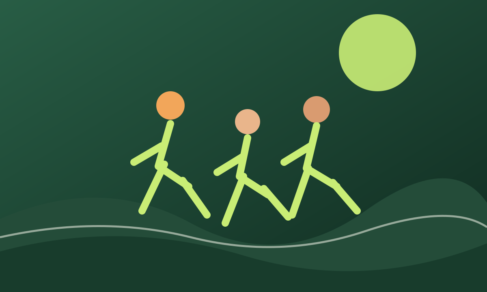

Solidarité
Mettre en avant une association locale et encourager l'engagement citoyen.
UN ÉVÉNEMENT POUR TOUS
Une matinée sportive pour bouger, se rencontrer et soutenir une initiative solidaire locale.
LE CONCEPT
Les Foulées Solidaires de Nanterre sont un événement sportif fictif proposant deux parcours de 5 et 10 km, accessibles à différents niveaux de pratique. L'objectif est de réunir des participants autour d'une activité sportive conviviale, tout en soutenant une cause associative. J'ai choisi le thème de la solidarité car je trouve intéressant de montrer que le sport ne se limite pas à la compétition et à la performance. Grâce à mes expériences dans le milieu associatif sportif, j'ai pu constater que le sport pouvait aussi favoriser les rencontres, l'entraide et l'inclusion. C'est cette dimension sociale que je souhaite mettre en avant à travers cet événement.
L'événement s'adresse aux coureurs débutants comme aux pratiquants réguliers. Chacun peut choisir la distance qui correspond à son niveau et participer à son rythme.

« Le sport rassemble les personnes autour d'un objectif commun, quelles que soient leurs expériences ou leurs performances. »
— L'esprit des Foulées SolidairesNOS OBJECTIFS
Mettre en avant une association locale et encourager l'engagement citoyen.
Proposer plusieurs distances pour permettre à chacun de prendre part au rendez-vous.
Créer un moment de partage entre habitants, étudiants, familles et sportifs.